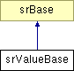

srValueBase Class Reference
Inheritance diagram for srValueBase:

Detailed Description
This is the abstract base class to represent a value, containing only a pointer to the sdValue that defines the schema definition for the representation.
The derived class will need to specialize for the specific values. The values are referenced by the attributes.
Member Typedef Documentation
| typedef srValueBase* srValueBase::SPtr
|
|
Constructor & Destructor Documentation
| srValueBase::srValueBase |
( |
const sd::sdValue * |
def |
) |
|
|
|
|
This is the srValueBase constructor.
- Parameters:
-
| def | A pointer to the schema definition for the value. |
|
| srValueBase::~srValueBase |
( |
|
) |
[virtual] |
|
|
|
This is the srValueBase destructor. |
Member Function Documentation
| const sd::sdValue * srValueBase::getDef |
( |
|
) |
const |
|
|
|
This function is the accessor to get the pointer to the schema definition for the value. |
The documentation for this class was generated from the following files:
Return to top of page
Copyright © 2002 - 2010 Cadence Design Systems, Inc.
All Rights Reserved.